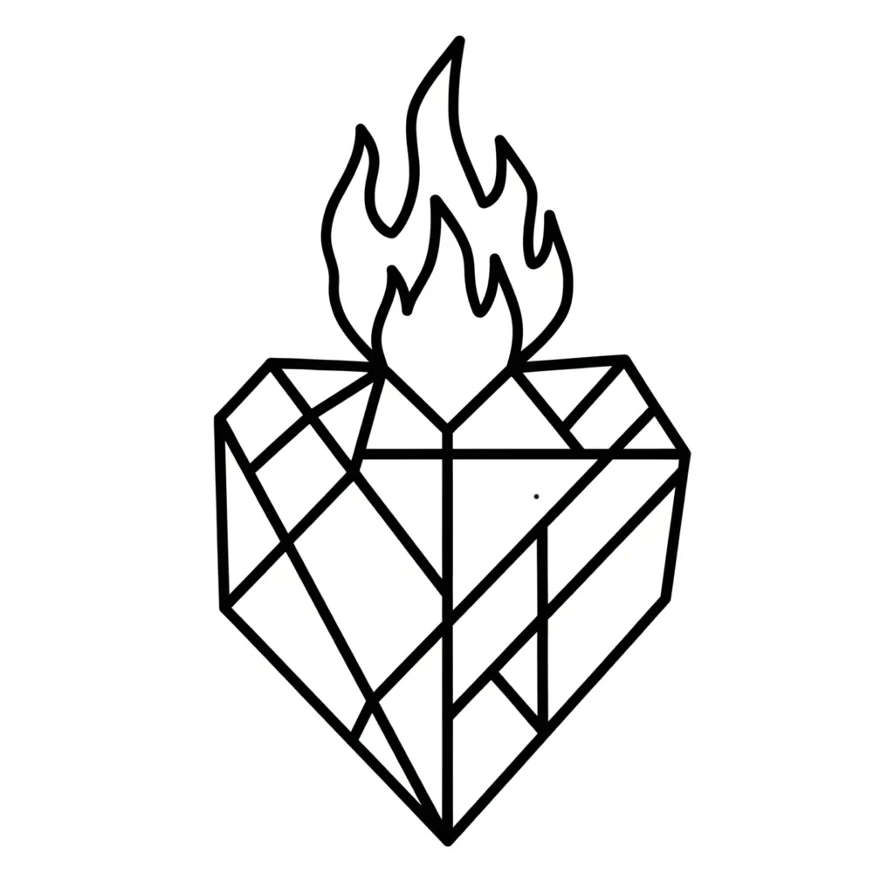

Under the apple tree I awakened you. — Song of Solomon 8:5
The Bible is a psychological drama — a symbolic unfolding of consciousness and its world of imagination. Its verses speak in pictorial nature symbols, tracing the movement of awareness through longing, identity, union, and transformation. Every character, every event, every instruction discloses a specific operation of the governing mechanism: YHVH/LORD assuming an identity as Ehyeh/I AM, with Elohim enforcing the outcome after its kind.
One of the most quietly pivotal verses in the entire narrative is Genesis 2:24:
"For this cause will a man leave his father and his mother and be joined to his wife; and they will be one flesh." (Genesis 2:24)
This is not a description of physical marriage. It is the precise psychological structure behind every transformation in Scripture — the mechanism of Thread 3 stated in its simplest and most complete form. To leave father and mother is to detach from the inherited states of consciousness: the familiar frameworks of belief, the habitual assumptions formed by conditioning, the old identity that has been occupied so long it feels like the self. The wife is the desired state — the I AM to be assumed and inhabited as a present reality. To cleave to her is to occupy that state with full inner commitment, regardless of what the outer senses confirm. And when the two become one flesh, the assumed identity has been so fully impressed upon consciousness that Elohim enforces it as outer, lived reality. The image has become the likeness. The assumption has become the embodiment.
Leave, Cleave, Become One Flesh: The Three Movements of Assumption
The three movements of Genesis 2:24 — leave, cleave, one flesh — are not sequential stages to be completed in order and then set aside. They are the continuous mechanics of the creative process, operating at every level of the biblical narrative and within every transformation story in Scripture.
To leave is the active detachment from the former assumed identity. This is Thread 3 in operation: YHVH/LORD recognising the old familiar state — the father's house, the inherited pattern, the former name — and withdrawing its occupation of it. The leaving is not gradual. As with the calling of the disciples, it is immediate: Matthew rises from the tax booth; Peter and Andrew drop their nets. The old state is not argued with or slowly abandoned — it is left, completely, as the new identity is assumed in its place.
To cleave is the full occupation of the new assumed identity. The Hebrew word translated "cleave" carries the sense of being fastened, adhered, joined without separation — the state held so completely that no gap exists between YHVH/LORD and the assumed I AM. This is the Ask → Believe → Receive principle in its central movement: belief is the cleaving. It is not intellectual agreement with a proposition — it is the full inner occupation of the state desired, sustained without wavering regardless of outer appearances. Elohim enforces the state that is actually occupied, not the state that is desired from a distance.
One flesh is the completion of enforcement. The assumed identity has been so fully occupied and sustained that Elohim has enforced it into the outer world as a lived reality. The inner and the outer are no longer in tension. The image has produced the likeness. What was inwardly assumed is now outwardly expressed. This is the natural outcome of the cleaving — not a reward granted from without, but the mechanical enforcement of what the statute of creation declares must follow genuine assumption.
"Put a sign on me as your heart's love, as a sign on your arm: for love is strong as death, and the desire for one's lover as unending as the underworld; its flames are flames of fire, a most burning flame." (Song of Solomon 8:6)
Love here is not affection. It is the force of assumption — the intensity with which YHVH/LORD occupies the desired I AM and refuses to relinquish it regardless of the testimony of the senses. It is strong as death because it holds the assumed identity even when every outer condition argues against it. Elohim enforces the state that is held with this quality of inner commitment.
The Difficulty of Leaving: Father and Mother As Inherited States
The instruction to leave father and mother is the most demanding movement of the three. The father and mother are not external people to be abandoned — they are the inherited structures of consciousness: the assumptions formed by long occupation, the self-perceptions reinforced by habit, the identities that feel most natural because they have been occupied the longest. To leave them is to withdraw YHVH/LORD's occupation of the old I AM and refuse to return to it, even when outer circumstances make the old state feel inevitable.
The patriarchal narratives demonstrate precisely how difficult this leaving is. Abraham leaves his father's house at the command of the governing I AM (Genesis 12:1) — but he names Sarah his sister in moments of fear, slipping back into the old frame where she is not fully claimed as the wife — the fully assumed state. The slip is the old identity reasserting itself. Elohim enforces accordingly: in Egypt, in Gerar, the outer circumstances reflect the inner retreat from the assumption. When Abraham returns to the full cleaving — when Sarah is his wife and the assumption is held — Elohim enforces the covenant.
Isaac repeats the same movement with Rebekah — naming her his sister, retreating from the full occupation of the assumed state in a moment of outer pressure. The pattern is not accidental. It shows that the movement from sister to wife — from a familiar, safe relationship with the desired state to full cleaving to it as the assumed identity — is the central inner work. Elohim enforces the state actually occupied. The sister is not enforced as the wife; the wife is not enforced as the sister. The name determines the nature of the state; the nature of the state determines what Elohim enforces.
Paul's Echo: The Old Man and the New
Paul states the same mechanism directly, echoing both the seed principle of Genesis 1:11 and the image and likeness of Genesis 1:26:
"That you are to put away, in relation to your earlier way of life, the old man, which is completely turned to evil desires; And be made new in the spirit of your mind, And put on the new man, to which God has given life, in righteousness and a true and holy way of living." (Ephesians 4:22–24)
Put away the old man — this is the leaving of Genesis 2:24. Be made new in the spirit of your mind — this is the cleaving: the inner renewal of the assumed identity. Put on the new man — this is the one flesh: the new I AM now occupying the place formerly held by the old one, with Elohim enforcing it as the new outer reality. The mechanism is identical. The language differs; the structure does not.
Proverbs 18:22 states the outcome of the completed assumption:
"He who gets a wife gets a good thing, and has grace from the Lord." (Proverbs 18:22)
The wife is the desired state assumed and held. The grace — the unearned enforcement of the governing I AM — is Elohim executing the verdict of the assumed identity. It is not granted on the basis of effort or merit. It is enforced on the basis of the state occupied. YHVH/LORD cleaves to the desired I AM; Elohim enforces the grace that corresponds to the nature of that state.
The Garden, the Bride, and the Song of Desire
In the Song of Solomon, the mechanism of Genesis 2:24 becomes fully visible. The bride is both a woman and a garden — the desired state and the field of consciousness in which it is cultivated are one and the same:
"A garden locked is my sister, my bride, a spring locked, a fountain sealed." (Song of Solomon 4:12)
The bride is called sister before she is fully claimed as spouse — she is the desired state seen but not yet fully assumed, known but not yet cleaved to. The garden is locked, the spring shut up, the fountain sealed — the potential of the assumed identity contained within but not yet released into outer expression. This is YHVH/LORD at the threshold of the cleaving: the desired state is present in consciousness but not yet occupied as the governing I AM.
The movement through the Song is the movement of Genesis 2:24: from beholding the desired state at a distance, through the ache of separation, to the full cleaving and union. When the bride declares:
"I am my loved one's, and his desire is for me." (Song of Solomon 7:10)
— the one flesh has been achieved. The assumed identity and YHVH/LORD are no longer two separate things — the one desiring and the one desired — but one. Elohim enforces the unified state as the governing reality. The garden is no longer sealed. The fountain flows.
"I came on him whom my soul loves: I kept him and would not let him go." (Song of Solomon 3:4)
This is the cleaving of Genesis 2:24 in its most direct statement: the assumed identity found and held, refused to be released regardless of what outer circumstances might demand. Elohim enforces the state that is held with this quality of inner refusal to let go. The beloved is not let go because the assumed I AM is not relinquished. What YHVH/LORD holds, Elohim enforces.
Judah and Tamar: The Breakthrough of the Fully Assumed State
The story of Judah and Tamar demonstrates the same mechanism at its most concentrated. Tamar — the desired state, the rightful claim — is withheld from Judah's son Shelah. Judah resists the full assumption, promising the union but deferring it indefinitely. The assumed identity is held at a distance rather than cleaved to. Elohim enforces accordingly: nothing moves, nothing is produced.
When Tamar takes the initiative — veiling herself and presenting the desired state directly to Judah — and when Judah makes the claim, the union is completed. Elohim enforces the fruit of the fully assumed state: Perez is born, whose name means breakthrough. The decisive breach with the old structure, the full cleaving to the desired state, produces the breakthrough that deferred assumption could not. Perez enters the lineage that leads to the governing I AM — the breakthrough is not incidental but the direct enforcement of what the assumed identity contains.
The Vav: The Nail That Binds
In Hebrew, the sixth letter is Vav (ו) — meaning nail, peg, hook: the instrument of connection and union. It functions grammatically as the conjunction and — the word that joins what was to what is becoming. The number six and the letter Vav carry within them the full structure of Genesis 2:24: the nail that binds two things into one, the conjunction that holds the old and the new together in the moment of transition.
The crucifixion completes this image. The nails of the crucifixion are the Vav — the instrument by which YHVH/LORD is fastened to the assumed identity so completely that no separation remains. This is the cleaving taken to its absolute limit: the assumed I AM held so firmly that even death — even the most extreme outer contradiction of the assumption — cannot dislodge it. Elohim then enforces the resurrection: the assumed identity rises as the governing outer reality because it was held without release through the full measure of outer contradiction.
The nail is not punishment. It is the symbol of the assumption fixed so firmly to consciousness that Elohim must enforce it as the permanent outer reality. This is what Genesis 2:24 encodes: the cleaving that becomes one flesh is the nailing of YHVH/LORD to the assumed I AM until Elohim has no choice but to enforce the union as lived experience.
The Emotional Thread: Longing as the Force of Assumption
The Song of Solomon is often misread as romantic poetry set apart from the rest of Scripture. It is the emotional interior of the entire biblical narrative made explicit. Every story in the Bible carries within it the longing that the Song names openly — the ache of YHVH/LORD for the I AM it has not yet fully assumed, the search for the beloved state through every outer circumstance, the refusal to stop seeking until the union is complete.
The bride seeks the beloved through the city, through the streets, through the night — and when she finds him she holds him and will not let him go (Song of Solomon 3:2–4). This is the inner movement of every transformation narrative in Scripture. Abraham seeking the promised state through years of wandering. Joseph holding the assumed identity of the ruler through the pit and the prison. Jacob wrestling through the night and refusing to release his hold until the blessing is given. The emotional force driving each narrative is the same force the Song names as love — the cleaving of YHVH/LORD to the assumed I AM that will not be relinquished.
"Come, O north wind; and come, O south; let your breath come on my garden so that its spices may be given out. Let my loved one come into his garden and take its best fruits." (Song of Solomon 4:16)
The garden — the field of consciousness — is opened to the beloved. The spices flow. The fruits are offered. This is the state of the completed assumption: no longer sealed or locked, but fully open to the enforcement of Elohim. The north and south winds are the governing forces of the inner Elohim summoned to bring the assumed identity into full outer expression. The beloved enters the garden — the assumed I AM occupies the field of consciousness completely — and Elohim enforces the fruit.
Conclusion: What You Cleave To, Elohim Enforces
Genesis 2:24 is the governing statute of assumption stated as a single verse. Leave the former state — withdraw YHVH/LORD's occupation of the old I AM. Cleave to the desired state — occupy the new I AM with full inner commitment, sustained without wavering. Become one flesh — the assumed identity impressed so completely upon consciousness that Elohim enforces it as the outer lived reality.
This pattern — from leaving, to cleaving, to one flesh — pulses through the entire biblical narrative. It is the structure of Abraham's journey, Joseph's rise, Jacob's wrestling, the bride's search in the Song. It is the mechanism Paul names in Ephesians. It is the symbol the Vav encodes in Hebrew. It is the completion the crucifixion and resurrection demonstrate.
The garden is not lost. It is sealed within, waiting for the assumed I AM to enter it fully. When YHVH/LORD leaves the former state and cleaves to the desired one — when the two become one flesh — Elohim enforces the garden into bloom. The spices flow. The fruit comes forth. The beloved is found and held, and will not be let go.
What you cleave to, Elohim enforces. This is the law encoded in Genesis 2:24, confirmed in every transformation in Scripture, and sealed with the nail of the Vav.